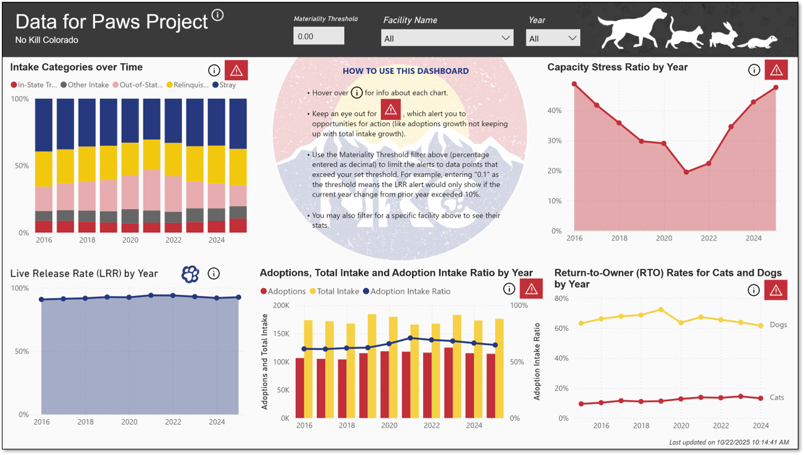

Portfolio
Turning Data into Strategy

Nonprofit Insights Engine
[ ].
Power BI
Financial Analysis

Impact Highlight:
Mapped 10,000+ data points to identify regional rescue bottlenecks in Colorado.
View Case Study →Data for Paws Dashboard
Wrangling disparate animal shelter data into a cohesive geographical heat map to optimize rescue operations.
Python
Tableau